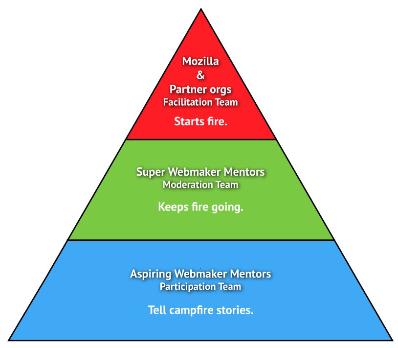
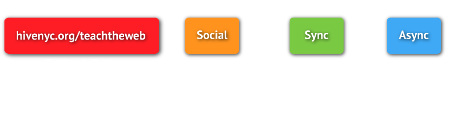

Your browser doesn't support the features required by impress.js, so you are presented with a simplified version of this presentation.
For the best experience please use the latest Chrome, Safari or Firefox browser.
Audience
Webmaker Mentors and the curious
Creators/Moderators
Super Webmaker Mentors
We consider this a success if learners:
- Actively engage in the course online and strive to complete it (Test train the trainer content via online delivery)
- Create and improve teaching content (Expand/iterate kits and their hacktivities)
- See themselves as part of the Webmaker community, with some aspiring to leadership roles (Grow the Webmaker Mentor and Super Mentor community base)
You will learn how to:
- Innovate in your practice with openness and online collaboration.
- Adapt educational resources to address learners and topics you care about.
- Test your remixed materials with a live audience and improve them through peer feedback.
Make cool things on the web & share that knowledge with the people you care about.
Topic #1
Introduction to Webmaker Learn how openness and online collaboration can help you innovate your practice and increase impact.
- Making as Learning Examine the maker and education movements with examples from active organizations.
- Connected Learning in practice Understand how groups and networks collaborate towards shared learning goals.
- Open Web Learn about the open web and how it facilitates open communities of practice.
Topic #2
Remix & contextualize: Learn how to adapt educational resources to address topics and learners you care about.
- Add the Web to Anything Identify skills and topics that are important to you and your learners.
- Webmaking as Learning Design a project and supporting activities for your topics and web literacy skills.
- Peers working in the open Give and receive peer feedback to improve your practice.
Topic #3
Do & Share: Learn how to test your remixed materials with a live audience and improve them through peer feedback.
- Playtesting Integrate feedback to improve your teaching confidence and materials.
- Make it real Find local collaborators and create a Webmaker event to help you launch your local learning network.
- #teachtheweb #4life Connect with the broader movement, find global support and help improve our practice.
Roles

Engagement

Metrics
- Mentors in the MOOC
- kits viewed, kits remixed
- discussion threads
- New mentors recruited
- events run, event participants
We need people who want to:
- moderate the course once it starts
- help write posts to introduce topics
- think up questions for each topic's twitter chat
- find an aggregation plugin for the blog hub
- make one page resources
nothing there for you but still wanna help? Email laura[at]mozillafoundation.org, there's MOAR